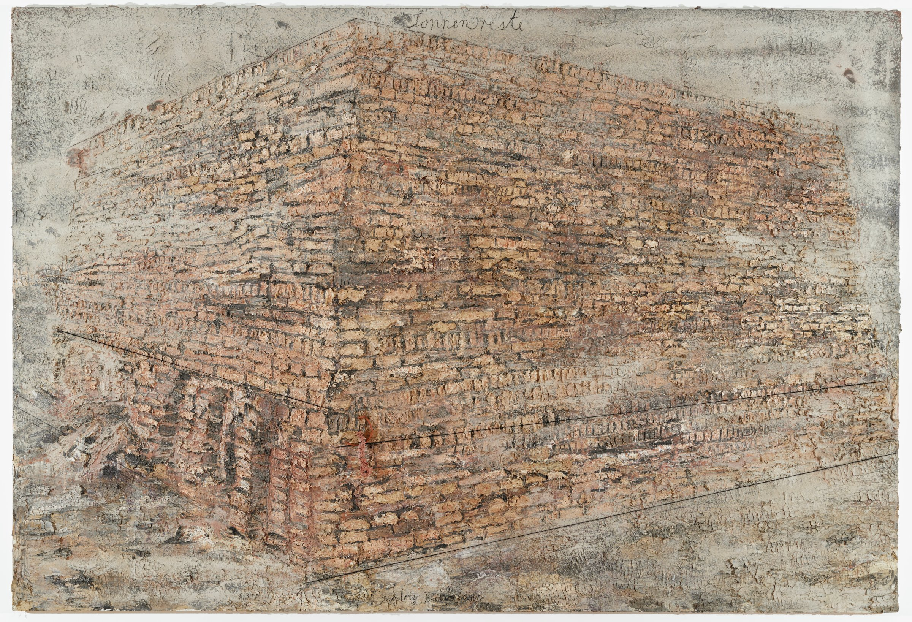

The High
It is strange that the exhibit that caught my eye was the one I ought relate to least. There was a painful torsion in the bodies laid out before me. The circle of mangled steel around me spun, and I saw the motion of cavalry trampling children, the pleading mothers, and the fighting men. As I spun further, I saw those same mothers and fathers with sickles at the throats of fleeing crowds. The loop of devastation had no end, and the compassion of the story was rewarded only with blood.
I circled back toward the entrance. A composition of frames of life, music, and tradition laid behind a wall of shattered glass. Blood drooled out of bullet holes in every photo. In another layer, more photos, more sheet music was mâchéd with blood over some of the holes.
A Ziggurat, growing out of the canvas with its red clay bricks, loomed over me. Chains of slavery hung from the pinnacle of the structure, caked red.